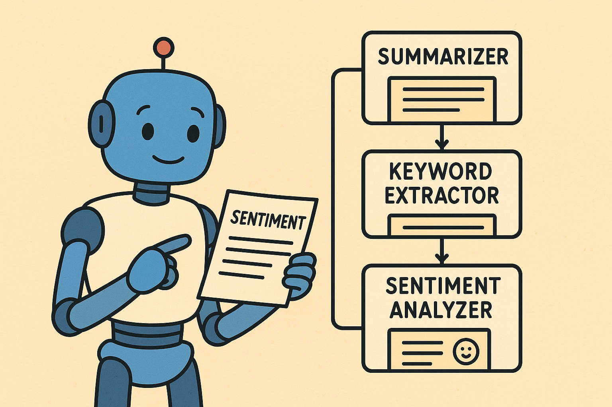

Exploring Modular LLM pipeline with DSPy

Introduction #
Large Language Models (LLMs) have made it incredibly easy to build intelligent NLP workflows. Especially with both general-purpose and specialized models, they can now better understand context, reason logically, and produce high-quality output.
Models can be connected through a working pipeline — where each step’s input and output are aligned — to execute complex tasks and generate structured results.
But as projects scale, maintainability, modularity, and reproducibility become more important than just getting a result.
In this post, I explored creating such a pipeline using DSPy — a declarative framework for structuring LLM pipelines — to analyze customer reviews.
The pipeline will summarize, extract keywords, and analyze sentiment, using multiple specialized models from Hugging Face.
About DSPy #
When building multi-step NLP systems, traditional pipeline development can be painful, even with capable Hugging Face pipelines. Passing non-standard input text, files, or structured data between steps can be tricky. Fine-tuning individual pipeline outputs so they feed correctly into the next step often requires trial and error. With enough development time, it will work, but the process can be messy and fragile.
DSPy offers a more disciplined approach:
- Each step (e.g., summarization, keyword extraction) becomes a module with strict input/output contracts.
- You can compose, debug, or swap modules without breaking others.
- The structure promotes clarity, reusability, and consistent evaluation across model versions.
This is ideal for building structured, composable AI workflows that remain maintainable even as complexity grows.
DSPy vs. Other LLM Frameworks #
There are other LLM frameworks similar to DSPy, such as LangChain and Google ADK.
- DSPy shines when you want predictable, typed, and modular pipelines — especially for analytics and multi-model tasks.
- LangChain excels for agent-driven flows and tool usage where outputs are less structured.
- Google ADK is suited for enterprise cloud deployments, but less lightweight than DSPy.
- Other frameworks like Haystack or LlamaIndex are more domain-specific for search and retrieval.
In short: if your goal is structured, repeatable multi-model NLP pipelines, DSPy offers a clean and maintainable solution, while others may be better for conversational agents, retrieval, or tool-assisted LLM reasoning.
Demo with DSPy - Online Comment Data Extractor and Analyzer #
In this demo, I build a multi-step NLP system using DSPy to analyze online product comments.
The pipeline performs three key tasks:
- Summarization – Condenses long comment text into a concise summary.
- Keyword Extraction – Identifies specific reasons behind the sentiment expressed in the comment.
- Sentiment Analysis – Classifies the general sentiment as positive or negative with a confidence score.
This example demonstrates how DSPy’s modular approach allows us to chain multiple LLMs seamlessly while keeping the workflow maintainable and reproducible.
Step 1: Define the Data Contracts #
In this step, I use Pydantic models to define clean data schemas. These schemas specify exactly what data flows between each module in the pipeline.
from pydantic import BaseModel
class TextInput(BaseModel):
text: str
class SummaryOutput(BaseModel):
summary: str
class KeywordsOutput(BaseModel):
keywords: list[str]
class SentimentOutput(BaseModel):
sentiment: str
confidence: float
Using Pydantic ensures that inputs and outputs are well-defined, so downstream modules know exactly what to expect.
For example, a typical LLM produces text, but in a more complex pipeline (or when wrapped in an Agent), the output could include structured data like dates, numbers, or JSON objects. Defining strict data contracts allows downstream modules to handle such outputs reliably without breaking the pipeline.
Step 2: Initialize Specialized Models #
This is the part we can define our brains (Agent) which utilizes different specialized language models for specific tasks. For example some LM were trained for general purpose, some are specialized in coding, content generation or translating text etc. Hence we can hand picked fine-tuned model for the specific tasks in the pipeline and DSPy will help chain them together.
In this demo, I used three different models (From Hugging Face) for the three tasks specified (Summarizer, Keyword Extraction and Sentiment Analysis). The models are lightweight enough that no dedicated GPU is needed, however with a dedicated GPU could improves in processing time.
| Task | Model | Strength |
|---|---|---|
| Summarizer | facebook/bart-large-cnn |
Excellent for long-form summarization with coherent phrasing. |
| Keyword Extraction | google/flan-t5-large |
Instruction-tuned model that follows structured prompts well. |
| Sentiment Analysis | distilbert-base-uncased-finetuned-sst-2-english |
Lightweight, accurate sentiment classifier. |
Choosing the right model for each sub-task helps the pipeline remain robust and interpretable, while maintaining high performance.
Here is the implementation of defining each model using the pipeline method from the transformers library by HuggingFace.
from transformers import pipeline
summarizer_model = pipeline("summarization", model="facebook/bart-large-cnn", device=0)
keyword_model = pipeline("text2text-generation", model="google/flan-t5-large", device=0)
sentiment_model = pipeline("sentiment-analysis",model="distilbert-base-uncased-finetuned-sst-2-english", device=0)
Step 3: Defining the individual DSPy Modules #
For the Summarizer, this is the first step in the pipeline, responsible for condensing the input comment text while preserving its main context. However, note that a poorly tuned model may omit important information or generate content that was not present in the original text.
Here is the definition for the Summarizer:
class Summarizer(dspy.Module):
def forward(self, inp: TextInput) -> SummaryOutput:
# Dynamically deal with input and output text length
n_tokens = len(inp.text.split())
max_len = max(30, int(n_tokens * 0.8))
min_len = max(10, int(n_tokens * 0.3))
result = summarizer_model(
inp.text,
max_length=max_len,
min_length=min_len,
num_beams=4,
length_penalty=2.0,
truncation=True,
do_sample=False
)
summary = result[0]["summary_text"].strip()
return SummaryOutput(summary=summary)
For the Keyword Extractor, it identifies specific reasons behind the summarized sentiment. By using an encoder-decoder transformer model, you can fine-tune tasks and output requirements without the extensive coding typically required in tranditional approaches. For example, for keyword extraction, you can leverage pre-trained embedding models or specialized package such as KeyBERT. However, rather than focus on parameter tuning, the main challenge now is crafting high-quality prompts.
Here is the definition for the Keyword Extractor:
class KeywordExtractor(dspy.Module):
def forward(self, inp: SummaryOutput) -> KeywordsOutput:
prompt = (
"You are an expert sentiment analyst.\n"
"Identify exactly 5 short keywords or phrases that describe the REASONS "
"behind the positive or negative sentiment.\n"
"Avoid brand names or generic nouns. Focus on concrete features or experiences.\n"
"Return only 5 comma-separated keywords.\n\n"
f"Text: {inp.summary}\nKeywords:"
)
result = keyword_model(
prompt,
num_beams=5,
no_repeat_ngram_size=2,
early_stopping=True,
repetition_penalty=1.8,
max_new_tokens=64,
)
text = result[0]["generated_text"]
keywords = [k.strip() for k in text.split(",") if k.strip()]
return KeywordsOutput(keywords=keywords[:5])
The final component is the Sentiment Analyzer. Its purpose is to evaluate the tone and sentiment of the summarized comment. It will then outpu a binary classification along with a confidence score. Tradinally, this could be achieved using a simple regression model, a classifier or an embedding-based model.
Here is the definition for the Sentiment Analyzer:
class SentimentAnalyzer(dspy.Module):
def forward(self, inp: SummaryOutput) -> SentimentOutput:
result = sentiment_model(inp.summary)[0]
return SentimentOutput(
sentiment=result["label"].lower(),
confidence=float(result["score"])
)
Key parameters explained (more related with transformer’s pipeline method):
| Parameter | Role |
|---|---|
num_beams |
Enhances quality via beam search. |
length_penalty |
Encourages conciseness of the output. |
no_repeat_ngram_size |
Prevents repetitive keyword phrases. |
repetition_penalty |
Penalizes token reuse. |
early_stopping |
Stops generation cleanly once conditions are met. |
max_new_tokens |
Ensures the model doesn’t ramble. |
do_sample |
Ensures deterministic results. |
top_k |
Consider only K probable tokens |
top_p |
Consider enough tokens to cover p total probability mass |
Step 4: Build the Full Pipeline #
Finally, we will build the analysis pipeline that connects all the previous defined DSPy modules and combine them into a full pipeline.
class AnalysisPipeline(dspy.Module):
def forward(self, inp: TextInput):
summary = Summarizer()(inp)
keywords = KeywordExtractor()(summary)
sentiment = SentimentAnalyzer()(summary)
return {
"summary": summary.summary,
"keywords": keywords.keywords,
"sentiment": sentiment.sentiment,
"confidence": sentiment.confidence,
}
pipeline = AnalysisPipeline()
Step 5: Test run the pipeline #
Using the following comment
comment_text = """
The milk frother container is made poorly. Bought mine in October and was just washing it
when I dropped it a few inches from the sink and it broke easily. Don't get me wrong,
it makes great coffee, but for a $1000 machine you'd expect better durability.
I can't even make cappuccino anymore and there’s no replacement part available.
"""
sample = TextInput(text=comment_text)
result = pipeline(sample)
print(result)
And the output from the pipline:
{
'summary': "The milk Frother container is made poorly. Bought mine on october and I was just washing the container and just dropped the container like a few inches from the sink and it broke easily. For a $1000 coffee machine you'd expect it to be more sturdy.",
'keywords': ['the milk frother container is made poorly'],
'sentiment': 'negative', 'confidence': 0.9997817873954773
}
Interestingly, the extracted keywords do not come directly from the original or summarized text. Instead, they are condensed to highlight the key reasons why users felt the coffee machine was not great.
Here is another example:
comment_text = f"""
The premium phone in Apple's new lineup benefits from a new design, faster charging and an improved processor
that helps the iPhone 17 Pro Max post the best time ever for an iPhone on our battery test. If you're a fan of Apple's phones, this is the one you'll want in your hand.
"""
sample = TextInput(text=comment_text)
result = pipeline(sample)
print(result)
And the output from the pipline:
{
'summary': "The iPhone 17 Pro Max has a new design, faster charging and an improved processor. If you're a fan of Apple's phones, this is the one you'll want in your hand.",
'keywords': ['new design', 'faster charging', 'improved processor'],
'sentiment': 'positive', 'confidence': 0.9985378980636597
}
The pipeline can now be integrated into a data ETL process and deployed on distributed computing systems for batch processing. The result can then be further utilized to create engineered features for subsequent machine learning model development or analysis.
Finally #
One could use more capable LLMs for these tasks, and even better, you could incorporate a model that evaluates and generates prompts to fine-tune the Keyword Extractor which DSPy supports. This will eliminating the needs for manual prompt engineering and this approach requires defining metrics to guide each LLM on what consitutes “good” vs. “bad” results.